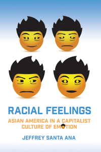

<body bgcolor="#FFFFFF" text="#000000" link="#0000FF" vlink="#CC0000" alink="#CC0000"><center><hr width="350" size="1" align="center" noshade>How capitalist culture stereotypes Asian Americans as either cheerful and successful strivers or insidious threats to white employment and status<hr width="350" size="1" align="center" noshade><p><a href="https://cdcshoppingcart.uchicago.edu/Cart/ChicagoBook.aspx?ISBN=9781439911921&&PRESS=temple" target="_top">Buy this book!</a> | <a href="https://cdcshoppingcart.uchicago.edu/Cart/Cart.aspx?PRESS=temple" target="_top">View Cart</a> | <a href="https://cdcshoppingcart.uchicago.edu/Cart/Cart.aspx?PRESS=temple" target="_top">Check Out</a></p><p></p></center><!--none//--><h1>Racial Feelings</h1>
<H2>Asian America in a Capitalist Culture of Emotion</H2>
<h3>Jeffrey Santa Ana</h3>
<P>cloth 1-4399-1192-4 $89.50, Apr 15, <FONT COLOR=#990033>Available</FONT>
<br>paper 1-4399-1193-2 $28.95, Apr 15, <FONT COLOR=#990033>Available</FONT>
<br>Electronic Book 1-4399-1194-0 $28.95 <FONT COLOR=#990033>Available</FONT>
<BR> 272 pp
6x9
12&nbsp;halftones
</P><BLOCKQUOTE><I>�Jeffrey Santa Ana�s </I>Racial Feelings<I> is an engaging and generative study that significantly enhances our understanding of Asian American cultural politics by mapping the complex convergence of affect and political economy that has made and remade Asian America. With its focus on how Asian American cultural texts make legible the intersections of capitalist development and affective subject formation, </I>Racial Feelings<I> illuminates how it feels to be economically constituted, and in doing so provides an immensely useful critical framework for appreciating the capacities and implications of Asian American critique across diverse contexts.� </i><br>&#151<b>Victor Bascara</b>, University of California, Los Angeles</I></BLOCKQUOTE>
<P>In <I>Racial Feelings</I>, Jeffrey Santa Ana examines how Asian American narratives communicate and critique�to varying degrees�the emotions that power the perception of Asians as racially different.
<P>Santa Ana explores various forms of Asian American cultural production, ranging from literature and graphic narratives to film and advertising, to illuminate the connections between global economic relations and the emotions that shape aspirations for the good life. He illustrates his argument with examples including the destitute Filipino immigrant William Paulinha, in Han Ong�s <I>Fixer Chao</I>, who targets his anger on the capitalist forces of objectification that racially exploit him, and Nan and Pingpin in Ha Jin�s <I>A Free Life</I>, who seek happiness and belonging in America.
<P><I>Racial Feelings</I> addresses how Asian Americans both resist and rely on stereotypes in their writing and art work. In addition, Santa Ana investigates how capitalism shapes and structures an emotional discourse that represents Asians as both economic exemplars and threats.
<BR>&nbsp;<h2>Excerpt</h2><P>Excerpt available at <a href="http://www.temple.edu/tempress">www.temple.edu/tempress</a></p>
<BR>&nbsp;<h2>Reviews</h2>
<p><i>"</i>Racial Feelings<i> addresses the emotions created by capitalism in Asian American and Asian mixed-race subjects. That capitalism can produce feelings is an intellectually exciting argument. Santa Ana is a meticulous researcher who illuminates the affective process of belonging in America in his careful investigation of literature, graphic narratives, and advertising by and about Asian Americans. He points out the discrepancies between Asian Americans who are created and contained by capitalism as national models while also held at arm�s length as potential threats in their global, capitalist efficiency. His fascinating arguments include those about marketing multiculturalism, the matter of race in the notion of �feeling ancestral,� and how ethnic remembering grates against corporate/capitalist post-racialism. Santa Ana�s careful work unearths what really was quite visible and palpable all along."</i><br>&#151<b>Monica Chiu</b>, Professor of English at the University of New Hampshire, and the author of <i>Scrutinized! Surveillance in Asian North American Literature</i>
<p><i>"[This book] makes a critical contribution to the recent body of scholarship on emotion specifically addressing race and ethnicity.... </i>Racial Feelings</i> provides thoughtful, meticulous readings of texts by artists of Asian descent, and these readings are situated in Asian American history and cultural studies and Marxist and materialist theory."</i><br>&#151<b><i>MELUS</i></b>
<p><i>"Jeffrey Santa Ana�s </i>Racial Feelings<i> investigates the broader intersections of property, affective suasion, and Asian American racialization.... [It] is an ambitious cultural studies project. Santa Ana connects a rich body of work in the field of economics and racial form�Colleen Lye is indispensable here�with theorists of affect and emotion... In a salient account of how the everyday production of feelings might integrate these processes, the oscillations of Asian America between model minority and yellow peril as an economic relation propel Santa Ana�s dual concerns.... Santa Ana elucidates how artists both accommodate and resist such contradictory processes of containment.... Santa Ana draws on popular culture to excavate the materialization of sensory perception into sensible racial forms and their mass circulation, purposely deploying affect and emotion interchangeably throughout this study." </i> <br>&#151<b><i>American Literature</i></b>
<BR>&nbsp;<h2>Contents</h2><P>
<p>Acknowledgments
<br>Introduction: Asian America and Racial Feelings
<br>1. Feeling in Historical Memory: Reimagining Kingston�s <i>China Men</i> with Shaun Tan�s Graphic Narratives
<br>2. Happiness for Hire: The Anger of Carlos Bulosan as a Critique of Emotional Labor
<br>3. Feeling Asian/American: Ambivalent Attachments in Asian Diasporic Narratives
<br>4. Feeling Ancestral: Memory and Postracial Sensibility in Mixed-Race Asian American Literature
<br>5. Happiness, Optimism, Anxiety, and Fear: Asiatic Racial Sentiments in Twenty-First-Century America
<br>Conclusion: The Comfort of Belonging
<br>Notes
<br>Works Cited
<br>Index
</P><BR>&nbsp;<H2>About the Author(s)</H2>
<P><b>Jeffrey Santa Ana</b> is Associate Professor of English at Stony Brook University.</P>
<BR><H2>Subject Categories</H2>
<p><A HREF="/tempress/literature.html" TARGET="_top">Literature and Drama</a>
<BR><A HREF="/tempress/cultural.html" TARGET="_top">Cultural Studies</a>
<BR><A HREF="/tempress/asian_amer.html" TARGET="_top">Asian American Studies</a>
</p>
<BR><h2 class="inpageheading">In the series</H2>
<P><I><a href="http://www.temple.edu/tempress/asam_history.html" onMouseOver="window.status='Click for other books in this series!'; return true;" onMouseOut="window.status=''; return true;" target="_top">Asian American History and Culture</a></i>, edited by Cathy Schlund-Vials, Rick Bonus, and Shelley Sang-Hee Lee.
</p><p>Founded by Sucheng Chan in 1991, the <I>Asian American History and Culture</I>, series has sponsored innovative scholarship that has redefined, expanded, and advanced the field of Asian American studies while strengthening its links to related areas of scholarly inquiry and engaged critique. Like the field from which it emerged, the series remains rooted in the social sciences and humanities, encompassing multiple regions, formations, communities, and identities. Extending the vision of founding editor Sucheng Chan and emeriti editor Michael Omi, David Palumbo-Liu, K. Scott Wong and Linda Trinh V�, series editors Cathy Schlund-Vials, Rick Bonus, and Shelley Sang-Hee Lee continue to develop a foundational collection that embodies a range of theoretical and methodological approaches to Asian American studies.</p>
<p align="center"><a href="https://cdcshoppingcart.uchicago.edu/Cart/ChicagoBook.aspx?ISBN=9781439911921&&PRESS=temple" target="_top">Buy this book!</a> | <a href="https://cdcshoppingcart.uchicago.edu/Cart/Cart.aspx?PRESS=temple" target="_top">View Cart</a> | <a href="https://cdcshoppingcart.uchicago.edu/Cart/Cart.aspx?PRESS=temple" target="_top">Check Out</a></p><p><font face="Arial" size="1"><a href="copyright.html" onMouseOver="window.status='Web Copyright Policy';return true;" onMouseOut="window.status=''" title="Web Copyright Policy">&copy;</a> 2017 <a href="http://www.temple.edu" target="new" onMouseOver="window.status='Link to Temple University home page';return true;" onMouseOut="window.status=''" title="Link to Temple University home page">Temple University</a>. All Rights Reserved. http://www.temple.edu/tempress/titles/2342_reg.html</font></p>